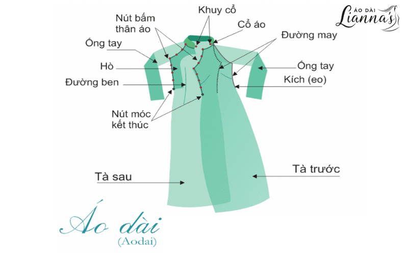
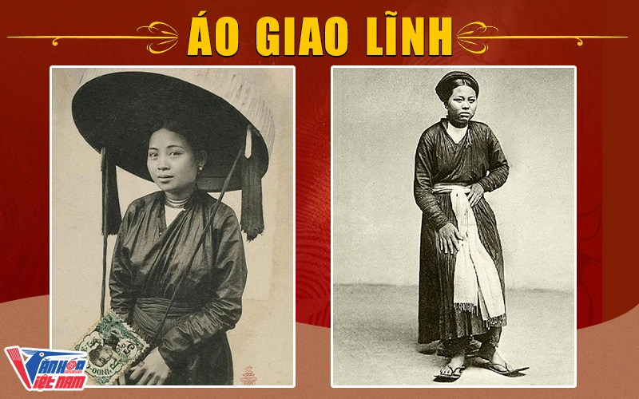
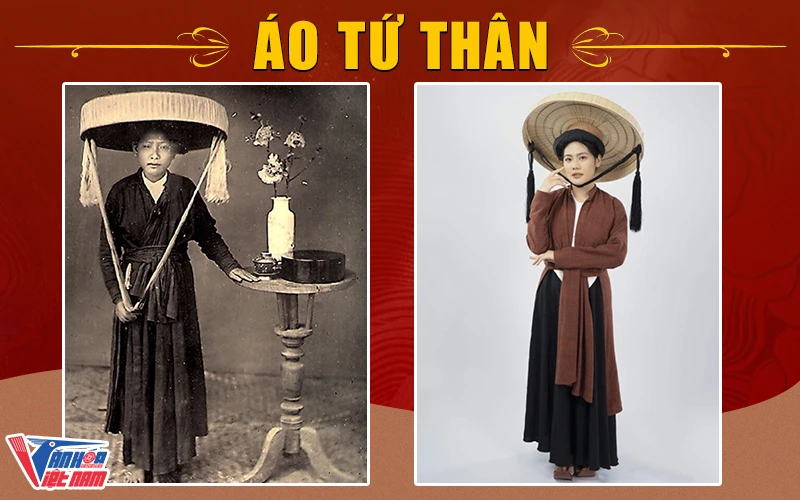
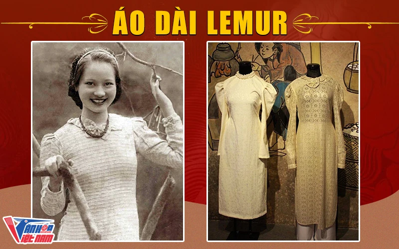

Giới thiệu chung
Áo dài, từ lâu, đã là một biểu tượng văn hóa không thể thiếu của đất nước Việt Nam. Qua từng giai đoạn phát triển trong quá khứ, áo dài đã liên tục thay đổi nhưng vẫn giữ vững được nét đẹp tinh tế, mang tính truyền thống đặc trưng của phụ nữ Việt Nam.
Bài viết dưới đây, hãy cùng nhóm 2 tìm hiểu về những đặc điểm khác nhau của áo dài xưa và nay qua từng thời kỳ phát triển của dân tộc.
Mục lục
- I. Tổng quan về Áo dài Việt Nam
- 1. Nguồn gốc của áo dài Việt Nam
- 2. Cấu tạo của áo dài
- II. Áo dài xưa và nay – Sự phát triển qua từng thời kỳ
- 1. Áo dài Giao Lãnh
- 2. Áo dài tứ thân
- 3. Áo dài ngũ thân
- 4. Áo dài Lemur
- 5. Áo dài Lê Phổ
- 6. Áo dài truyền thống Việt Nam từ 1970 đến nay
- 7. Áo dài cách tân
- III. Ý nghĩa của áo dài Việt Nam
- IV. Liên hệ với chúng tôi
I. Tổng quan về Áo dài Việt Nam
Áo dài là trang phục truyền thống của phụ nữ Việt Nam, được thiết kế với kiểu dáng dài, ôm sát cơ thể và thường được may bằng vải lụa hoặc vải cotton. Dưới đây là những thông tin về nguồn gốc và cấu tạo của áo dài xưa và nay, hãy lưu lại để tìm hiểu thêm về quốc phục đất nước ta.
1. Nguồn gốc của áo dài Việt Nam
Nguồn gốc của áo dài Việt Nam được cho là xuất phát từ phong cách áo mặc của phụ nữ Việt Nam xưa, gọi là áo giao lĩnh, đây cũng là kiểu dáng sơ khai nhất của áo dài Việt Nam. Trong suốt nhiều năm lịch sử, áo dài đã trải qua nhiều thời kỳ và thay đổi về kiểu dáng, chất liệu, màu sắc. Tuy nhiên, áo dài ngày nay vẫn giữ được sự truyền thống, nó là biểu tượng văn hóa và vẻ đẹp của phụ nữ Việt Nam.
2. Cấu tạo của áo dài
Cổ áo: Cổ áo thể hiện phần cổ điển, có chiều cao khoảng 4 đến 5cm. Hiện nay, cổ áo dài đã được biến tấu với nhiều kiểu như cổ tròn, cổ vuông, cổ thuyền, cổ trái tim, cổ chữ U. Ngoài ra, có thể thêm các chi tiết như đính ngọc để tạo điểm nhấn.
Thân áo: Thân áo tính từ phần cổ đến phần eo. Áo dài thường có cúc khóa từ cổ đi xuống vai, sau đó kéo xuống đến vùng hông. Thân áo dài thường được xẻ làm hai tà, mỗi bên xẻ ở vị trí hông. Hiện nay, kiểu dáng áo còn biến tấu thành áo dài 2 tà hoặc áo dài 4 tà.
Tà áo: Thường gồm 2 tà, một phía trước và một phía sau. Trong quá khứ, tà trước và tà sau thường bằng nhau, nhưng hiện nay đã có nhiều biến thể khác nhau. Có áo dài với tà trước ngắn hơn tà sau, hoặc thậm chí là áo dài với 4 tà. Mỗi tà thường được làm gấp đôi để tạo độ phồng và sự bồng bềnh, tạo vẻ duyên dáng và thoải mái cho người mặc.
Tay áo: Tay áo thường may sát với cánh tay, nhưng đã có nhiều biến thể như tay phồng, tay lỡ, tay loe, tay lững, tay ngắn, tay xẻ…
Quần áo dài: Thay thế cho váy trong thời kỳ xa xưa. Quần áo dài thường có dáng ống rộng, chấm gót. Vật liệu sử dụng từng là vải cứng cáp, nhưng ngày nay đã mở rộng với nhiều loại vải khác nhau như lụa, gấm, vải mềm và nhẹ hơn. Màu sắc thường là trắng, nhưng hiện nay có nhiều sự đa dạng về màu sắc. Trang phục áo dài xưa và nay thường kết hợp với chiếc chân váy dài, tạo vẻ dịu dàng và thanh lịch.
Cấu tạo của áo dài
II. Áo dài xưa và nay – Sự phát triển qua từng thời kỳ
1. Áo dài Giao Lĩnh
Trước hết, cần đề cập đến loại áo dài giao lĩnh, xuất hiện trong giai đoạn đất nước chia cắt thành hai khu vực. Đây là một loại áo có thiết kế rộng, với hai đường xẻ ở bên hông hoặc được gọi là tà. Tay áo và cổ tay của nó cũng được may rộng. Thân áo dài tới chấm gót chân và được làm từ bốn tấm vải, được mặc phủ bởi yếm lót và kết hợp với thắt lưng màu cùng chiếc váy đen.
Áo giao lĩnh có kiểu cổ áo tương tự áo tứ thân, nhưng phần vạt áo ở phía trước không cần buộc giống như áo tứ thân. Mặc dù chỉ mang nét đặc trưng sơ bộ của áo dài xưa và nay, loại trang phục này vẫn toát lên vẻ duyên dáng, tinh tế đặc biệt.
Áo Giao Lĩnh
2. Áo dài tứ thân
Tiếp theo, chúng ta đề cập đến áo tứ thân, một xu hướng xuất hiện vào thế kỷ XVIII, mà gốc gác từ việc biến tấu áo dài giao lĩnh. Theo những nhà nghiên cứu lịch sử, để thuận tiện hơn trong công việc lao động sản xuất của phụ nữ, áo giao lãnh trước đó được tách ra thành 2 tà trước, sau đó buộc lại với nhau, tạo thành 2 tà ở giữa và 2 tà sau sau đó được may liền thành vạt áo. Đi kèm với áo tứ thân thường là chiếc yếm, khăn mỏ quạ hay nón quai thao – những chi tiết quen thuộc và gắn liền với trang phục này.
Áo tứ thân so với áo giao lãnh không thay đổi nhiều về kiểu dáng, thường có màu sắc tối, nhưng vẫn mang lại cảm giác mộc mạc, nhẹ nhàng và khiêm tốn cho người mặc.
Áo dài Tứ Thân
3. Áo dài ngũ thân
Áo dài ngũ thân tiếp tục phát triển từ áo tứ thân, ra đời trong thời kỳ vương triều của vua Gia Long vào thế kỷ 19. Áo dài ngũ thân dựa trên cơ sở của áo tứ thân, với 4 vạt áo được may thành 2 tà ở phía trước và 2 tà ở phía sau. Phom áo rộng và có cổ, loại áo này rất phổ biến trong thời kỳ đầu thế kỷ XX.
Sự khác biệt chính với áo dài xưa và nay nằm ở việc áo dài ngũ thân được bổ sung thêm một vạt áo năm ở giữa, tương tự như một mảnh áo lót kín đáo. Điều này không chỉ thể hiện sự tinh tế mà còn mang đậm tính khiêm nhường của người mặc. Sự thay đổi này thể hiện sự phân biệt tầng lớp giữa quý tộc và người lao động nghèo, cho thấy sự chênh lệch về địa vị và giai cấp trong xã hội thời kỳ đó.

Áo dài Ngũ Thân
4. Áo dài Lemur
Vào năm 1939, xuất hiện một loại áo dài cách tân mang tên “Áo dài Lemur,” được tạo ra từ sự biến tấu của áo ngũ thân. Sáng tạo bởi hoạ sĩ Cát Tường và được đặt theo tên tiếng Pháp của bà. Khác với kiểu dáng truyền thống, áo dài Lemur có 2 vạt ở phía trước và sau, được may ôm sát theo các đường cong của cơ thể, tôn lên vẻ thướt tha, quyến rũ của người phụ nữ.
Các chi tiết tay phồng và cổ áo khoét hình trái tim được lấy cảm hứng từ váy tay phồng phương Tây, làm cho áo dài Lemur trở nên thời thượng hơn. Để tôn thêm nét nữ tính, hàng nút phía trước được mở ra thành một khe hở dọc theo vai, sau đó chạy dọc theo một bên sườn áo.
Áo dài Lemur
5. Áo dài Lê Phổ
Áo dài Lê Phổ, là sự kết hợp hài hòa giữa áo tứ thân và áo dài Lemur, đã được thiết kế bởi hoạ sĩ Lê Phổ để tạo nên một bộ trang phục tinh tế và hấp dẫn hơn, với các đường cong thon thả, tươi trẻ và đầy mới mẻ.
Trong việc thiết kế áo dài Lê Phổ, đã loại bỏ đi những yếu tố từ phương Tây không phù hợp với phong tục và tập quán của người Việt, điều này làm thể hiện sự cách tân so với kiểu áo dài Lemur. Áo có vạt áo dài và ôm sát cơ thể, tay áo không phồng, cổ áo được thiết kế kín với hàng nút áo phía bên phải, toát lên phong cách riêng biệt của áo dài xưa và nay. Kiểu áo này đã nhanh chóng trở nên phổ biến trong những năm 50 và được phụ nữ Việt ưa chuộng trong suốt thời gian dài.

Áo dài Lê Phổ
6. Áo dài truyền thống Việt Nam từ 1970 đến nay
Qua nhiều giai đoạn lịch sử, áo dài xưa và nay của Việt Nam đã chính thức xuất hiện vào những năm 1970 và vẫn được duy trì đến ngày nay. Áo dài đã trở thành biểu tượng quốc phục, kế thừa những giá trị quý báu từ quá trình hình thành và phát triển của nó, đồng thời thể hiện rõ vẻ văn hóa và truyền thống đậm đà của người Việt.

Áo dài truyền thống
7. Áo dài cách tân
Dù có những thay đổi về kiểu dáng từ truyền thống đến hiện đại và sáng tạo, tà áo dài truyền thống vẫn giữ được nét đẹp đậm nét và cá tính riêng biệt, mà không một loại trang phục nào có thể thay thế.
Với phom dáng ôm sát theo đường cong quyến rũ của người phụ nữ, áo dài cách tân ngày nay được thiết kế với phong cách hiện đại. Chính nhờ những sự thay đổi độc đáo này mà áo dài xưa và nay ngày càng thường xuất hiện trong cuộc sống hàng ngày của phụ nữ Việt Nam.

Áo dài cách tân
III. Ý nghĩa của áo dài Việt Nam
Tà áo dài chứa đựng những ý nghĩa truyền thống sâu sắc, đại diện cho sự tự hào và tình cảm sâu sắc của người Việt. Dù đã trải qua hàng ngàn năm, văn hoá Việt vẫn không mất đi giá trị và được gìn giữ qua áo dài – trang phục vừa quyến rũ vừa kín đáo, mang trong mình sự thanh lịch độc đáo, không hề gì bị lẫn lộn với các nền văn hoá khác.
Hình ảnh của người phụ nữ mặc áo dài xưa và nay luôn hiện diện trong các dịp lễ lớn và cả trên sân đấu quốc tế trong các cuộc thi, bất kể quy mô lớn hay nhỏ. Điều này thể hiện tầm quan trọng của áo dài trong lòng người Việt và việc sử dụng nó trong những ngày quan trọng của đất nước và cuộc sống cá nhân.
IV. Liên hệ với chúng tôi
📩 Phản hồi với chúng tôi tại đây
Chúng tôi trân trọng những ý kiến đóng góp và sẽ phản hồi sớm nhất có thể.